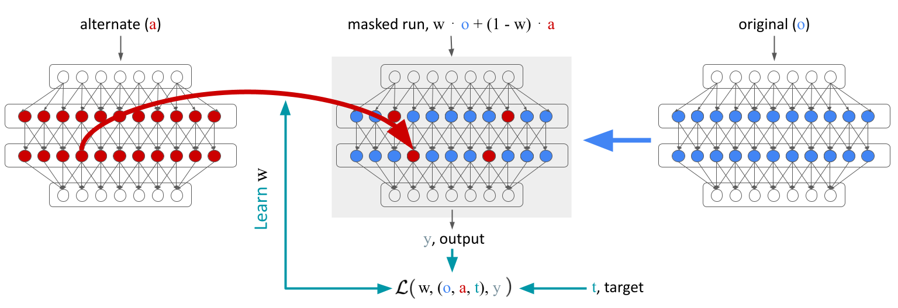
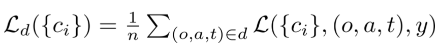

Many approaches for identifying causal model components rely on brute-force activation patching, a
method that is both slow and inefficient. Moreover, these methods often fall short in
identifying components that collaborate to generate a desired output.
In this paper, we introduce a technique for automatically identifying causal model components through
optimization over an intervention. We establish a set of desiderata, representing the causal
attributes of the model components involved in the specific task. Utilizing a synthetically generated
dataset aligned with these desiderata, we optimize a binary mask over the model components to pinpoint the
causal elements. The resulting optimized mask identifies the model components that encode the desired
information, as semantically probed by the desiderata.

Figure 1: Localizing computation with desiderata. The figure depicts training with a single
(original, alternate, target) tuple within a desideratum. We learn a mask w that combines activations
from an alternate sequence a into the computation of the model on the input of the original sequence
o such that the output y moves towards the target t.
Why use desiderata-based masking to locate model components?
A significant limitation of current methods for identifying the circuit responsible for a specific task is
that, while they aid in localizing components within the neural network, they fail to offer insights into
the semantics of these components. In other words, they do not tell you what the components are doing. This
is where our method comes in. We use desiderata to guide the optimization of the mask. This allows us to not
only locate the components, but also understand what they are doing. This is a major advantage of our
method over existing methods.
How to locate model components using a test set?
Follow these steps to locate model components using the desiderata-based masking technique:
Specify the model component granularity to explore: Specify the granularity
of the model components to explore. This can be at the level of layers, neurons, or attention
heads. More granular components is more computational expensive, but allows for
more specific localization of a model behavior.
Define the desiderata with various types of interventions on the desired circuit. These are the
causal attributes of the model components involved in the task under investigation.
Generate a synthetic dataset aligned with the desiderata. Each desideratum d corresponds to
a set of n 3-tuple, each
of which consists of an original sequence (o), an alternate
sequence (a), and a target value (t). When the activation of
the sought-after circuitry generated with o is replaced with
the corresponding activation generated with a, the model
should output t. The target value (t) is determined based
on the nature of the intervention: it can remain equal to the
output of o (indicating no change in the output is expected),
be altered to match the output of a, or be set to a completely
different third value.
Figure 2. Variable Binding Desiderata. Each desideratum is a set of original (o),
alternate (a), and
target (t) 3-tuples. In the Value Dependence desideratum, patching should change the output to
the alternate's output; in the Operation
Invariance desideratum, patching should have no effect.
Learn a binary mask over model components to pinpoint the causal elements. The mask is optimized
to minimize the difference between the model output on the original sequence after the intervention and the
target value.

We use l0.5 regularization with tunable strength λ over the mask entries to encourage
patching only a sparse set of model components.
Varibale Binding Circuit: A Proof of Concept
As a proof
of concept, we apply our method to automatically discover shared variable binding circuitry in
LLaMA-13B, which retrieves variable values for
multiple arithmetic tasks. Our method successfully localizes variable binding to only 9 attention
heads (of the 1.6k) and one MLP in the final token’s residual stream.
Related Works
Our work builds upon the existing research that aims to localize model components responsible for performing
specific tasks:
Xander Davies, Max Nadeau, Nikhil Prakash, Tamar Rott Shaham, David Bau.
Discovering Variable Binding Circuitry with Desiderata." arXiv preprint arXiv:2307.03637 (2023).
bibtex
@article{davies2023discovering,
title={Discovering Variable Binding Circuitry with Desiderata},
author={Davies, Xander and Max Nadeau and Nikhil Prakash and Tamar Rott Shaham and David Bau},
journal={arXiv preprint arXiv:2307.03637},
year={2023}
}